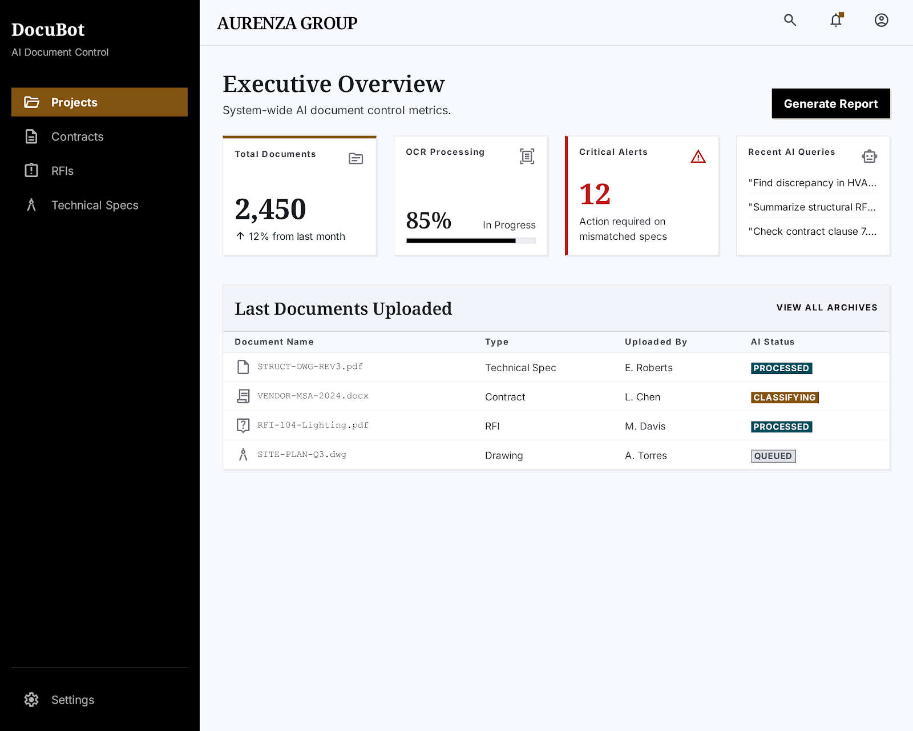
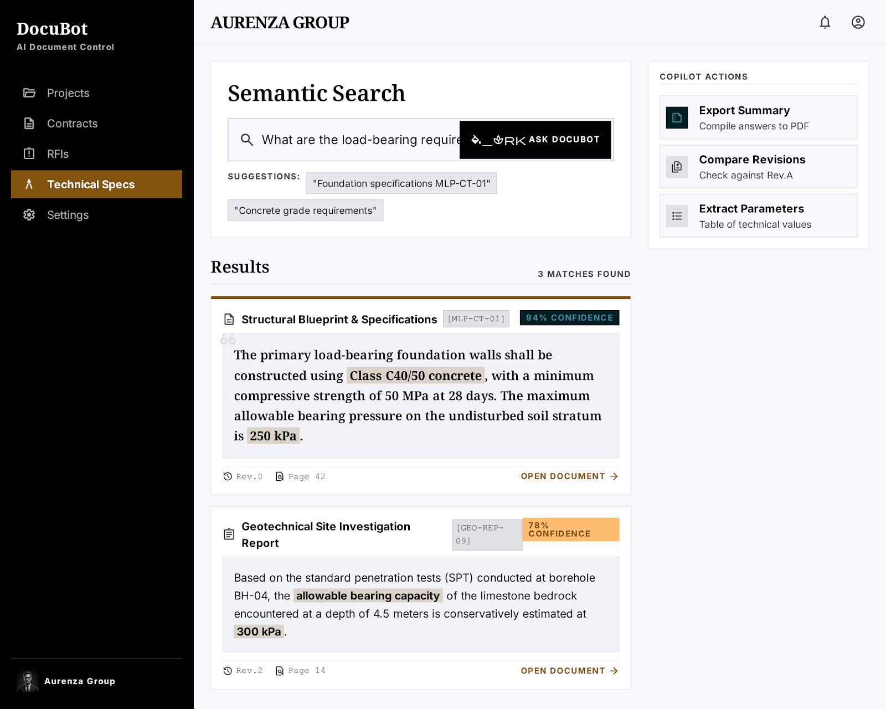
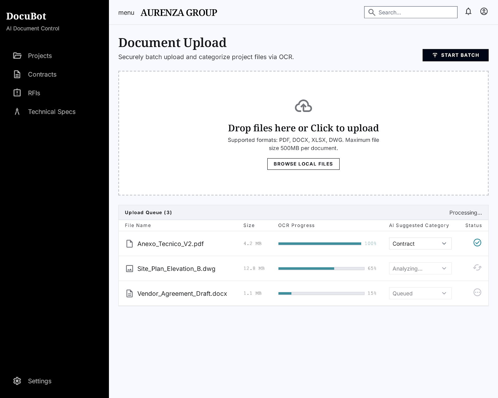
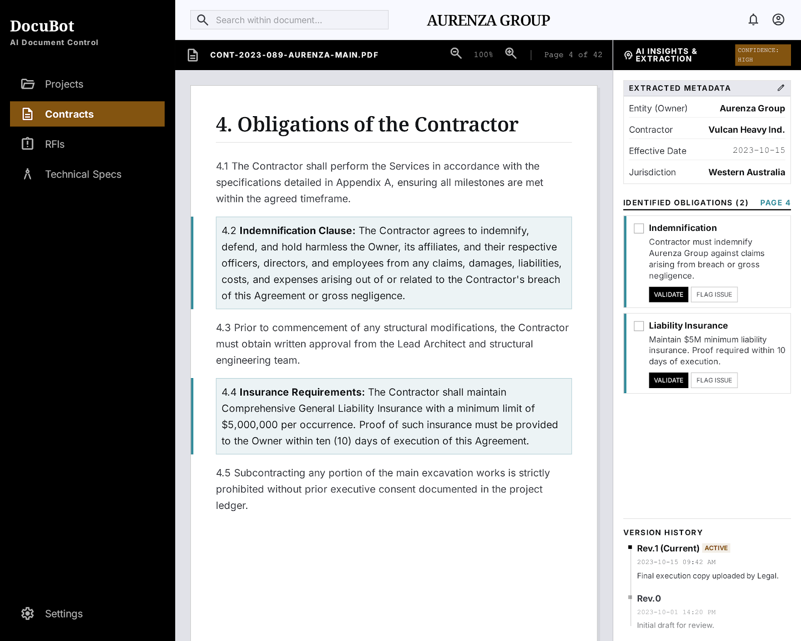
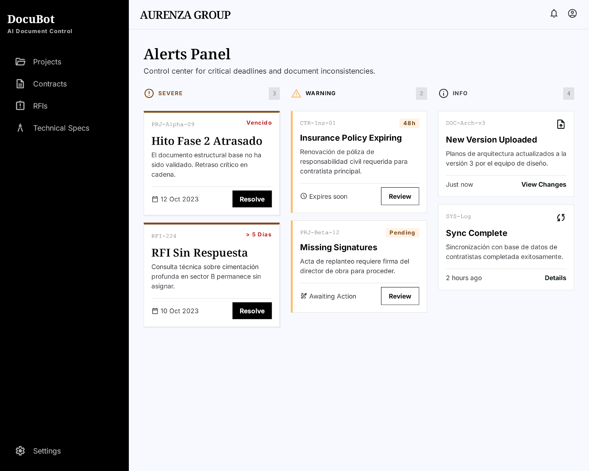
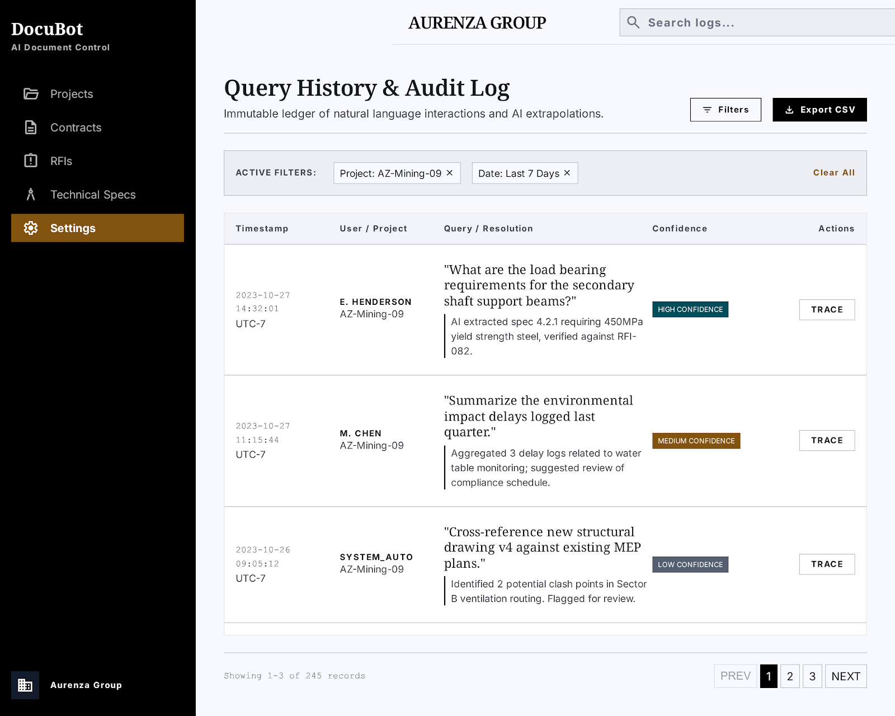
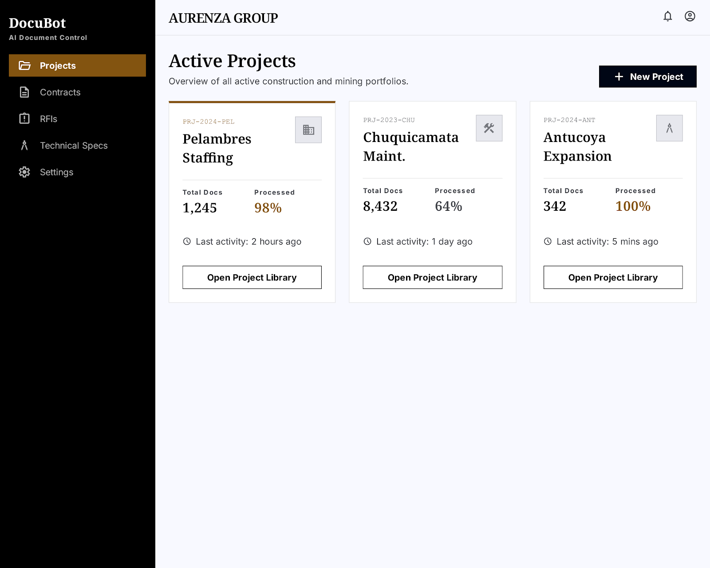
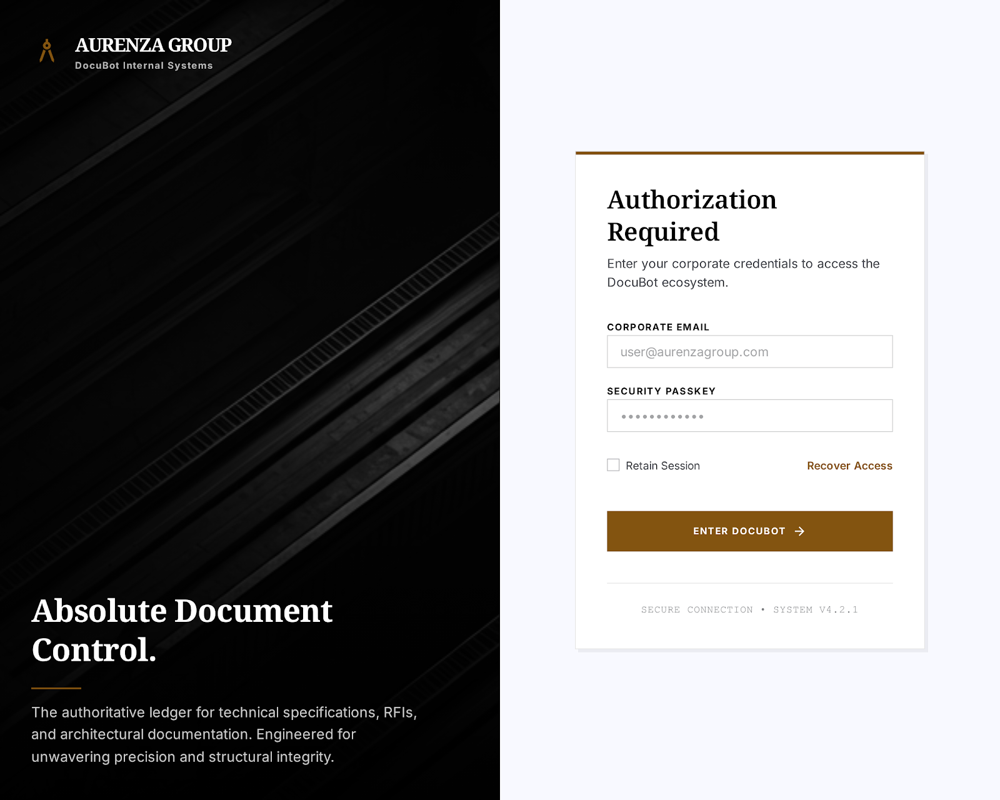

Aurenza IA — Módulo 02 · Revisión de pantallas diseñadas

KPIs totales, documentos procesados, alertas activas, últimas actividades RAG.

Interfaz copiloto con barra de búsqueda prominente, resultados con citas exactas y badge de confianza.

Drag-and-drop con barras de progreso OCR en tiempo real y clasificación IA automática.

Vista dividida: preview del documento a la izquierda, metadata y obligaciones extraídas a la derecha.

Plazos críticos, RFIs pendientes e inconsistencias contractuales detectadas por IA.

Log auditable de interacciones usuario-IA con nivel de confianza y trazabilidad completa.

Cards por proyecto con estado, conteo de documentos, alertas abiertas y progreso.

Pantalla de acceso corporativo con identidad visual industrial y SSO Azure AD.